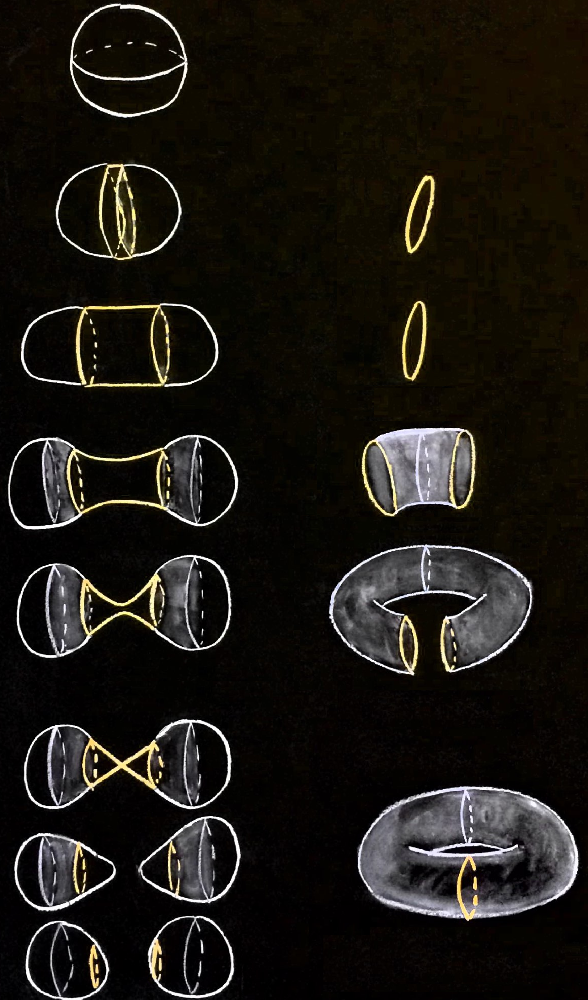
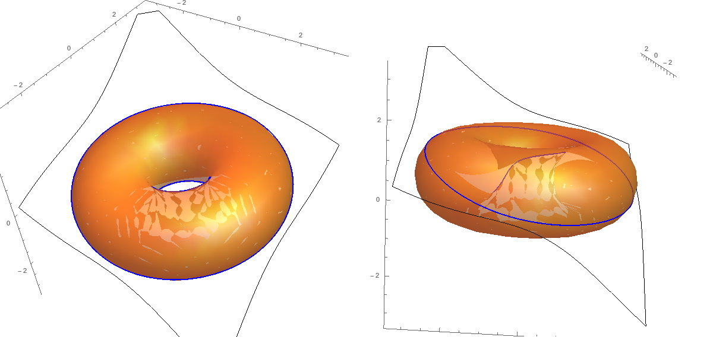
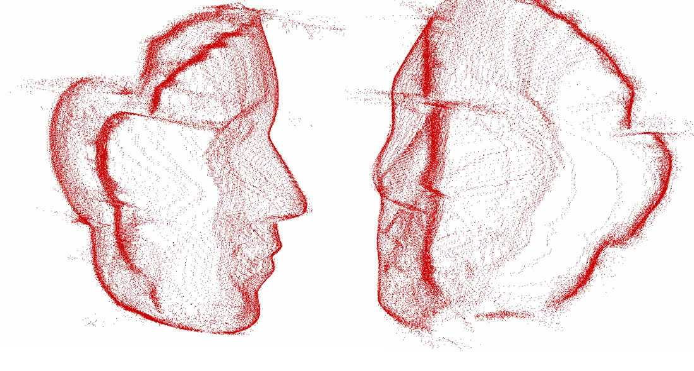

Dividing ball, with its space of bitangent lines

Apparent contour of a torus (mathematica nb) (hi-res pdf view 1, view 2) 
Family of quadrics tangent to two balls (right-click to play mp4) Planar slice
Family of quadrics tangent to a torus
Points of a face
